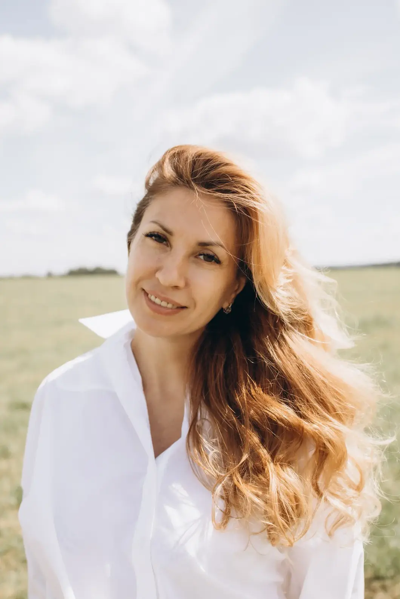
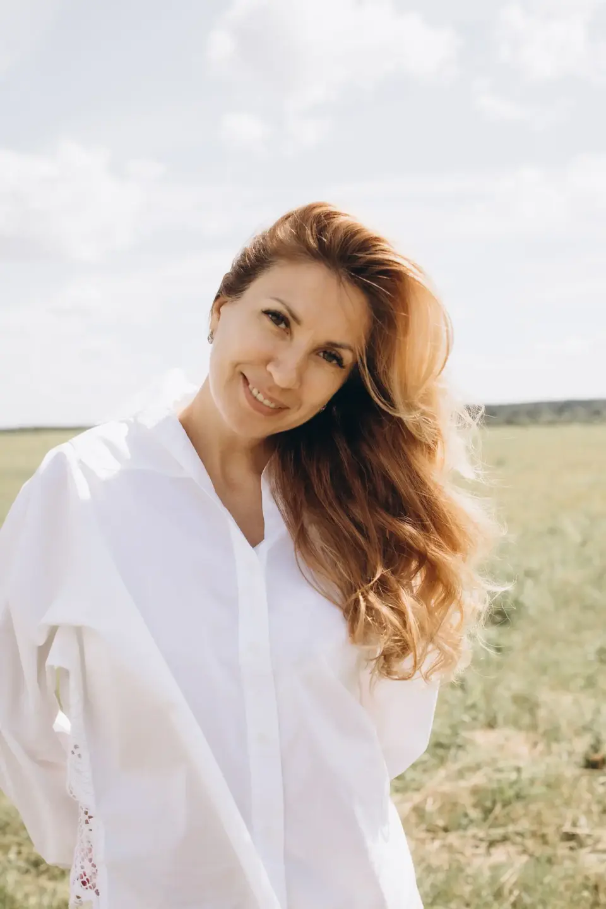
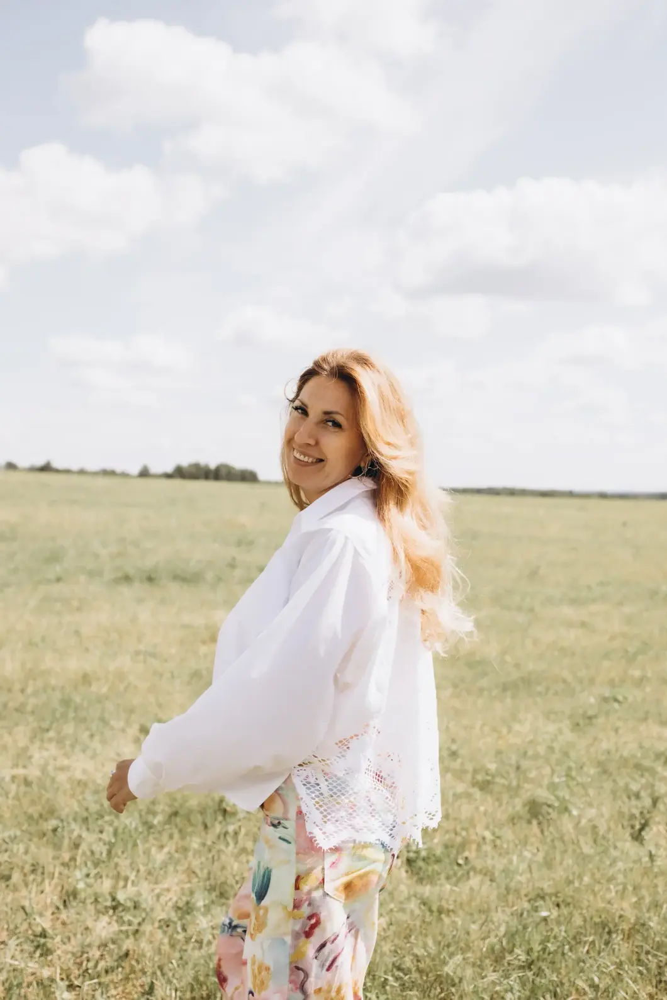
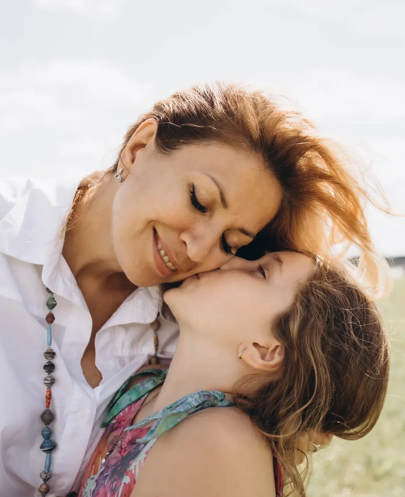

Найдёте себя
И реализуете свой потенциал по максимуму.
АВТОРСКАЯ ПРОГРАММА СОПРОВОЖДЕНИЯ
Реализуйте потенциал на все 100%, выйдите на новый уровень жизни и масштаба и качественно улучшите все сферы.
Старт: после диагностической сессии
Я проведу Вас к лучшей версии вашей жизни!
Авторское сопровождение с Ольгой Паркиной
по трансформации и личностному росту.
Можно прийти такими, какие вы есть.

01 / ВАШИ ПЕРЕМЕНЫ
Жизнь станет интересной, насыщенной и многогранной.
И реализуете свой потенциал по максимуму.
Кратно вырастете в доходах и выйдете на новый уровень возможностей.
И реализуете наилучший сценарий.
Перемены, которые произойдут с вами во время нашего взаимодействия, — не на короткий период. Эти перемены — навсегда.
Благодаря полученным инструментам и знаниям после сопровождения вы сможете самостоятельно удерживать и улучшать свои результаты на постоянной основе.
Первый раз вы пройдёте этот уникальный трансформационный путь вместе со мной, а после сопровождения сможете уверенно повторять его самостоятельно и улучшать свои результаты!
Избавитесь от ограничивающих страхов, блоков, убеждений и установок, которые не позволяют жить той жизнью, которой желаете. Станете автором своей жизни и навсегда откажетесь соглашаться на меньшее.
Раскроете свои истинные таланты и потенциал. Составим пошаговый план действий для быстрого воплощения желаемого в жизнь — без расфокуса, лишних действий и затрат ресурсов.
Приступите к конкретным действиям для реализации своего наилучшего сценария в жизни, отношениях и заботе о здоровье, в любимом деле, которое будет приносить удовольствие и достойный финансовый доход. Станете счастливыми, реализованными, успешными и гармоничными.
02 / ВАШ ПРОВОДНИК

Создаю пространство,
где вас слышат и принимают.
Мой фундамент - классическая психология, второе высшее закончила в РУДН, детскую психологию закончила в Институте клинической психологии и психотерапии, также являюсь телесным терапевтом, психосоматотерапевтом, специалистом по биодинамике и ТВУ (техника возврата управления своей жизнью), танцевально-двигательным терапевтом, работаю как с детьми, подростками, так и со взрослыми
Мои ценности - Свобода, Любовь к себе, Глубина, Качество, Развитие, Красота, Реализация.
— это путь женщины, которая много раз проходила через кризисы, потери, перемены и каждый раз выходила на новый уровень силы, глубины и реализации.
— помогать людям выходить из ограничений, старых сценариев и внутренней боли к состоянию свободы, силы и осознанной жизни. Я даю возможность человеку увидеть свою истинную ценность, раскрыть потенциал и начать жить в соответствии со своей природой, а не чужими ожиданиями.
что, меняя человека изнутри, мы меняем его реальность, родовые сценарии и будущее следующих поколений.
03 / ФОРМАТ РАБОТЫ
Внимание к вашему запросу, глубокая обратная связь и индивидуально выбранные практики.
Личный чат для вопросов и поддержки по ходу выполнения заданий.
04 / ПРОГРАММА
Сначала познакомимся и услышим, что отзывается вашему сердцу.
На диагностике мы вместе определим, с какими из направлений будем работать, исходя из вашего запроса. Маршрут сопровождения составляется индивидуально.
ПЕРВЫЙ ЭТАП СОПРОВОЖДЕНИЯ
Определим исходную точку, ваши запросы, цели и ресурсы. Наметим путь работы и выберем подходящие направления сопровождения.
Раскройте направление, чтобы увидеть входящие в него программы. Внутри вы найдёте подробное описание.
Познание себя, чувства, убеждения и опыт детства.
Таланты, своё направление, деньги и шаги к желаемой жизни.
Личные границы, семейные сценарии, родительство и отношения с близкими.
Контакт с телом, восстановление сил и ресурсного состояния.
Работа с чакрами, прошлыми жизнями и кармическими темами.
Для обретения внутренней опоры, принятия себя, наполненности и гармонии в отношениях.
Практика по погружению в подсознание для получения необходимых для себя ответов
Техника по наполнению ресурса и наполненности
Практика на принятие себя и обретение самоценности
Техника на обретение внутренней опоры и уверенности
Уникальная энергетическая разработка по очищению от любых негативных событий, состояний и воздействий, в том числе магических
Практика по гармонизации взаимоотношений со своим партнером, близкими и окружающими
Техника на обретение спокойствия, умиротворения и безмятежного спокойного сна
Практика по исцелению психосоматических и психоэмоциональных недугов
05 / ОПЫТ КЛИЕНТОВ
Дорогая Оля! ❤️
Я от всего сердца и Души хочу поблагодарить тебя за всё то, что ты делаешь 🙏
За ту глубокую работу, которую ты проводишь.
Я не помню, чтобы я ещё кому-то могла так довериться 🤍
Пришла сегодня к тебе на сессию в состоянии полной потерянности. Не было понимания, куда двигаться и зачем. Ощущение какой-то пустоты внутри.
В процессе работы много чего “вылезло”. Но самое главное, благодаря тебе я осознала, что мешает мне жить. Жить той жизнью, которой я хочу, а не той, которой кому-то надо.
Сейчас мне стало легче дышать. Я для себя прояснила, куда направить свой фокус внимания, а куда перестать сливать свою энергию.
Сейчас ещё какое-то время всё будет укладываться по полочкам, буду наблюдать 🤍
Сегодня ты помогла мне снять очень тяжёлый груз и надеюсь, что конец этой истории станет масштабным началом моей новой жизни 🙏
Огромная тебе благодарность!!! И благодарю тебя, что ты ЕСТЬ ❤️
К Ольге пришла с запросом проработки отношений+очищение от всего, что мешает движению вперед.
Тема отношений раскрылась для меня на 💯 начиная от отношений с родителями все было разложено по полочкам🤩 Тряхнуло, конечно, не слабо и все еще процесс не окончен😅, но оно того стоит.
На протяжении трех месяцев после наших встреч восхищаюсь на сколько же легко теперь можно получать ответы на вопросы, видеть первопричину какого-то поведения человека на основании полученных знаний и инструментов💫
Так же хочу отметить, что для меня была очень важна поддержка и помощь Ольги 💞 особенно в те моменты, когда мозг начинал сопротивляться и элементарно не понимал чего от него хотят. Либо приходили осознания, разобраться в которых не всегда получалось самостоятельно. Благодарю, Благодарю, Благодарю!
Оля, благодарю 😘🫶💚💚💚
Перед днем рождения все вспоминала и анализировала, что со мной происходило за последние лет 10, какой была и что изменилось) сейчас я счастливая женщина, живу, кайфую, люблю 💖
Я очень счастлива, что встретила тебя, мой проводник 🫶, очень счастлива, что встретила столько замечательных, светлых людей в твоем поле. Благодарю Высшие Силы, что ведут меня, благодарю Творца за этот прекрасный мир, в котором столько любви! Шагаю с любовью и благодарностью за всё что было и за всё что есть 💚
Ольга, хочу сказать большое спасибо за Вашу работу🫂
Я очень давно так хорошо себя не чувствовала, я даже внешность свою стала по-другому воспринимать, смотрю в зеркало и вся сияю!
Спасибо, что помогли справиться с проблемами, которые так долго копились, раньше у меня не было сил жить, а теперь я с новыми силами иду вперед❤️🙏
06 / СТОИМОСТЬ
ЗНАКОМСТВО С ЗАПРОСОМ
Индивидуальная сессия
для работы с вашей темой.
ПОСЛЕДОВАТЕЛЬНАЯ РАБОТА
Один месяц сопровождения.
Встречаемся раз в неделю.
ГЛУБОКОЕ ПОГРУЖЕНИЕ
Два месяца сопровождения.
Встречаемся раз в неделю.
Формат и график обсуждаем индивидуально после диагностики.
07 / ВАЖНОЕ ДО НАЧАЛА

Продолжать жить серой, скучной, рутинной жизнью, испытывая постоянное состояние обреченности, страха, неизбежности, бесцельности и пустоты. Так и не добиться ничего существенного, не сделать ничего ценного и не проявиться, не масштабироваться, не сделать блестящей карьеры и остаться неуслышанными. Продолжать подглядывать и завидовать счастью других, продолжая обвинять всех вокруг в своих неудачах, несостоятельности и не сложившейся жизни.

Найти себя, раскрыть свою силу, потенциал и все грани талантов. Определиться с истинным для себя направлением и реализоваться в нем на все сто. Стать счастливыми, успешными, проявленными и финансово свободными. Обрести жизнь полную красок, интересных событий и безграничных возможностей. Осознать свою ценность и значимость, решить все существующие запросы, стать Автором своей жизни и реализовать лучший сценарий.
ПЕРВАЯ ВСТРЕЧА — С ТЕПЛОМ И ВНИМАНИЕМ
Первый шаг — бесплатная диагностическая сессия.
Познакомимся в спокойной атмосфере.
Вы сможете поделиться тем, что на душе,
и почувствовать, откликается ли вам работа со мной.